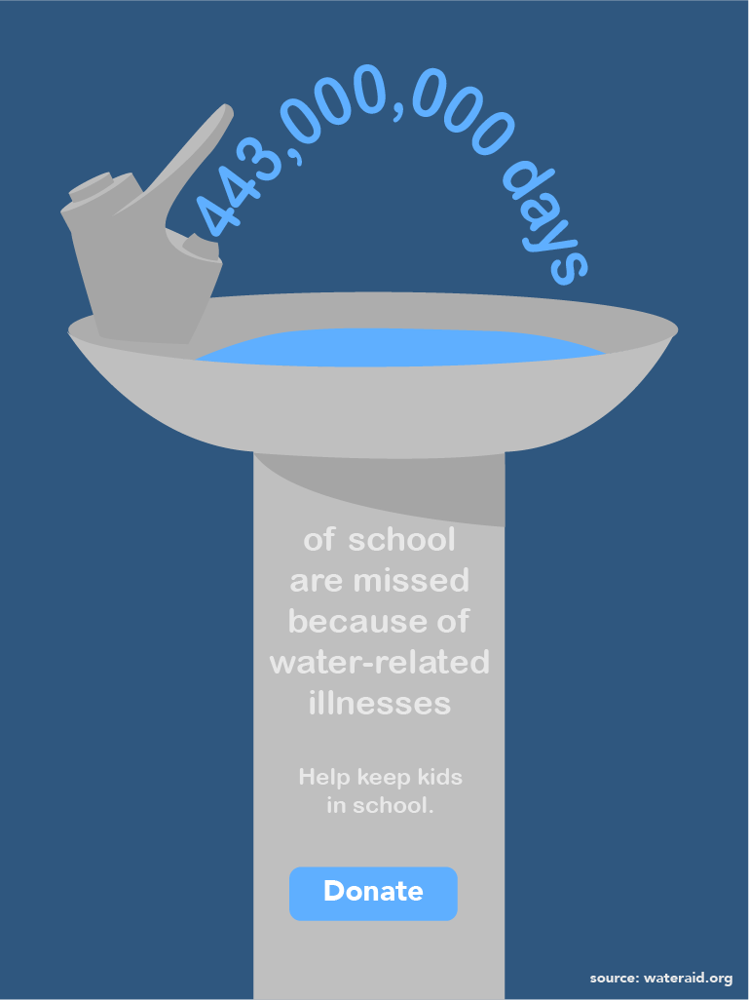

Ella Mathewson

This poster is the third one about the lack of access to clean water. The point of this project was to create polarized explorations of an enviornmental or social issue and call people to donate or learn more about said issue.
This poster shows 9 cups, all filled with water, with one of them locked. The anamoly calls attention to the glass as well as displays the statistic in an adequate manner. The call to action also plays along with the theme of the access to water being locked.